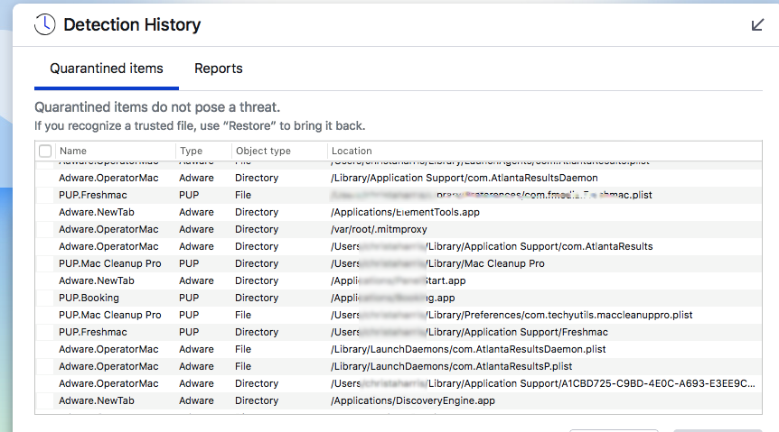

from: Thomas Featherstone [thomas.george.fstone@...]
to: thomamason.github.io
date:
subject: 'A.akamaihd.net' malware on MacOSx
I had an old friend call me last night with a worrying problem. He had been using his partner's Macbook for work that day, and had downloaded some adware that was redirecting his
browser's default search engine to an ad-website. Specifically 'kysearchds3495-a.akmaihd.net'. The 'akmaihd.net' element refers to a legitimate CDN (content delivery network) which
is abused by malware/spyware to reroute user's browsers to spam websites.
It would appear that this has become a prevalent issue of late, given the number of recently published articles on the matter. I asked my friend to install one of the numerous,
free malware scanners available online and see what came up after a standard scan...

'AtlantaResults' is the culprit then. However, deleting the files associated with AtlantaResults, resetting the browser configurations,
removing PUP's and browser extensions associated with akmaihd.net, and then rebooting the machine didn't solve my friend's problem.
The answer laid in the Macbook's profile settings. Simply deleting the profile created by the malware (in this instance, it was named "AtlantaResultsDaemon")
and then running another scan with anti-malware software took care of the issue.
This malware is known to disguise itself as adobe flash installers, so take care when updating your system,
and only ever download and install software from trusted sources. No streaming champions league then...
Cheers,
thomamason
Relevant reading: A deeper look at '*-akmaihd.net' malware. (links to an external website)